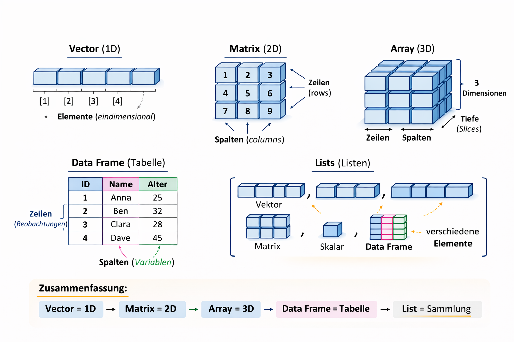

c(1,1.5,2)[1] 1.0 1.5 2.0Lernziele dieses Kapitels sind:
c(), seq() und rep() zu erzeugen und typische Operationen anzuwenden,Ein Überblick über die wichtigsten Strukturen zeigt Abbildung Figure 3.1.

 Vektoren sind die zentrale Datenstruktur in R, da viele Funktionen automatisch elementweise auf Vektoren arbeiten.
Vektoren sind die zentrale Datenstruktur in R, da viele Funktionen automatisch elementweise auf Vektoren arbeiten.
Man unterscheidet zwei wichtige Typen:

Es gibt verschiedene Möglichkeiten, Vektoren in R zu erzeugen.
Mit c() (combine): Mit der Funktion c() können mehrere Werte zu einem Vektor zusammengefasst werden.
c(1,1.5,2)[1] 1.0 1.5 2.0Hier wird ein numerischer Vektor mit drei Elementen erzeugt.
Mit double(): Die Funktion double(n) erzeugt einen numerischen Vektor der Länge \(n\), dessen Elemente zunächst alle den Wert 0 haben.
double(5)[1] 0 0 0 0 0Dies ist z. B. nützlich, wenn man einen Vektor vorab reservieren möchte.
Mit dem Sequenzoperator :: Mit : kann man eine einfache Folge von ganzen Zahlen erzeugen.
1:5[1] 1 2 3 4 5Mit rep(): Die Funktion rep() wiederholt einen Wert oder einen Vektor eine bestimmte Anzahl von Malen.
rep(3,5)[1] 3 3 3 3 3Hier wird die Zahl 3 fünfmal wiederholt.
Mit seq(): Mit seq() kann man allgemeinere Zahlenfolgen erzeugen.
seq(0,0.6, 0.2)[1] 0.0 0.2 0.4 0.6Hier beginnt die Folge bei 0, endet bei 0.6 und erhöht sich jeweils um 0.2.
Mit Hilfe von Indizes kann man auf einzelne Elemente eines Vektors zugreifen. In R beginnt die Zählung bei 1 (nicht bei 0 wie in manchen anderen Programmiersprachen).
Für einen Vektor x mit der Länge length(x) sind daher die gültigen Indizes 1...length(x). Der Zugriff auf Elemente erfolgt mit eckigen Klammern.
x <- c(1.7, 3.8, 4.2, 5.7)
x[2] # zweites Element [1] 3.8x[2:3] # Elemente 2 bis 3[1] 3.8 4.2x[c(4, 4, 1)] # Auswahl mehrerer Positionen (auch mehrfach möglich)[1] 5.7 5.7 1.7x[-c(1, 2)] # entferne Elemente an Position 1 und 2[1] 4.2 5.7x[i] → einzelnes Elementx[i:j] → zusammenhängender Bereichx[c(...)] → beliebige Auswahlx[-i] → Ausschluss von PositionenIn R können Vektoren nicht nur über numerische Positionen, sondern auch über logische Werte (TRUE und FALSE) indiziert werden. Dabei bestimmt jeder logische Wert, ob ein Element ausgewählt wird oder nicht.
TRUE → Element wird ausgewähltFALSE → Element wird nicht ausgewähltDer logische Vektor muss dabei die gleiche Länge wie der Vektor haben, auf den er angewendet wird.
Beispiel
x <- c(1.7, 0.5, -0.7, 0, 2.8, 0.2)
x[c(TRUE, TRUE, FALSE, FALSE, TRUE, TRUE)]Der logische Indexvektor entscheidet, welche Werte aus x übernommen werden.
| Position | Wert in x |
Logischer Wert | Ergebnis |
|---|---|---|---|
| 1 | 1.7 | TRUE | wird übernommen |
| 2 | 0.5 | TRUE | wird übernommen |
| 3 | -0.7 | FALSE | wird ignoriert |
| 4 | 0 | FALSE | wird ignoriert |
| 5 | 2.8 | TRUE | wird übernommen |
| 6 | 0.2 | TRUE | wird übernommen |
Das Ergebnis lautet:
[1] 1.7 0.5 2.8 0.2Merksatz
Ein logischer Vektor wirkt wie ein Filter:
TRUElässt ein Element passieren,FALSEentfernt es.
Eine sehr häufige Anwendung der logischen Indizierung ist das Filtern von Vektoren anhand von Bedingungen. Dabei wird eine Bedingung auf jedes Element eines Vektors angewendet. Das Ergebnis ist ein logischer Vektor, der anschließend als Index verwendet werden kann.
Beispiel
x <- c(0.3, 0.1, 5.7, -1.0)
y <- c(2, 3, 1, 5)
x > 0Der Ausdruck x > 0 überprüft für jedes Element von x, ob es größer als 0 ist.
Das Ergebnis ist ein logischer Vektor:
[1] TRUE TRUE TRUE FALSEDieser logische Vektor kann direkt als Index verwendet werden:
x[x > 0]Ergebnis:
[1] 0.3 0.1 5.7Alle Werte von x, die größer als 0 sind, werden ausgewählt.
Merksatz
Eine Bedingung erzeugt einen logischen Vektor, der direkt zum Filtern eines Vektors verwendet werden kann.
which()Manchmal interessiert nicht der Wert selbst, sondern an welcher Position im Vektor sich ein Element befindet, das eine bestimmte Bedingung erfüllt. Dafür gibt es die Funktion which().
Beispiel
which(x > 0)Ergebnis:
[1] 1 2 3Das bedeutet: Die ersten drei Elemente von x sind größer als 0.
Merksatz
which()gibt die Positionen der Elemente zurück, die eine Bedingung erfüllen.
Mit der Funktion c() (combine) können mehrere Vektoren zu einem neuen Vektor zusammengefügt werden.
Beispiel
c(x, y)Ergebnis:
[1] 0.3 0.1 5.7 -1.0 2 3 1 5Die Elemente des zweiten Vektors werden dabei einfach an den ersten Vektor angehängt.
Merksatz
Mit
c()können mehrere Werte oder Vektoren zu einem neuen Vektor kombiniert werden.
Skalare Operationen werden für jedes Element einzeln durchgeführt.
x <- c(1,1.5,2)
x+2[1] 3.0 3.5 4.0x-2[1] -1.0 -0.5 0.0x*2[1] 2 3 4x/2[1] 0.50 0.75 1.00In R können arithmetische Operationen direkt auf Vektoren angewendet werden.
Dabei werden die Operationen elementweise ausgeführt. Das bedeutet, dass die entsprechenden Elemente zweier Vektoren miteinander verrechnet werden.
Wenn zwei Vektoren dieselbe Länge besitzen, werden ihre Elemente paarweise kombiniert.
Beispiel: Addition
c(1,2,3) + c(1.2,-0.5,-0.1)[1] 2.2 1.5 2.9Beispiel: Subtraktion
c(1,2,3) - c(1.2,-0.5,-0.1)[1] -0.2 2.5 3.1Beispiel: Multiplikation
c(1,2,3) * c(1.2,-0.5,-0.1)[1] 1.2 -1.0 -0.3Beispiel: Division
c(1,2,3) / c(1.2,-0.5,-0.1)[1] 0.8333333 -4.0000000 -30.0000000Merksatz
Arithmetische Operationen auf Vektoren werden elementweise ausgeführt.
Sind die Vektoren unterschiedlich lang, verwendet R das sogenannte Recycling-Prinzip.
Dabei wird der kürzere Vektor wiederholt, bis er die Länge des längeren Vektors erreicht.
Beispiel
c(1,1,1,1,1) * c(1,2,3)Warning in c(1, 1, 1, 1, 1) * c(1, 2, 3): Länge des längeren Objektes
ist kein Vielfaches der Länge des kürzeren Objektes[1] 1 2 3 1 2Intern interpretiert R dies als:
c(1,1,1,1,1) * c(1,2,3,1,2)[1] 1 2 3 1 2Merksatz
Ist ein Vektor kürzer, wird er in R automatisch wiederholt (Recycling).
Viele mathematische Funktionen können sowohl mit einzelnen Zahlen (Skalaren) als auch mit Vektoren arbeiten.
Eine skalare Funktion hat mathematisch die Form
\[f:\mathbb{R} \rightarrow \mathbb{R}\]
Sie wird auf jedes Element eines Vektors einzeln angewendet.
Beispiel: Eingabe eines Skalars
exp(1)Beispiel: Eingabe eines Vektors
exp(c(0,1,2,3))Das Ergebnis enthält die Exponentialfunktion für jedes einzelne Element.
Merksatz
Viele Funktionen in R arbeiten automatisch elementweise auf Vektoren.
Einige Funktionen erwarten Vektoren als Argumente und berechnen daraus einen einzelnen Wert.
Mathematisch entspricht dies Funktionen der Form
\[f:\mathbb{R}^n \rightarrow \mathbb{R}\]
Beispiel: Mittelwert
mean(c(1.2,-0.5,-0.1))[1] 0.2Der Mittelwert fasst mehrere Werte zu einer einzelnen Kennzahl zusammen.
Beispiel: Korrelation
cor(c(1.2,-0.5,-0.1), c(2.2,0.5,0.9))[1] 1Die Funktion cor() berechnet die Korrelation zwischen zwei Vektoren, also ein Maß für den linearen Zusammenhang zwischen zwei Variablen.
Beispiel: Skalarprodukt
c(1,2,3) %*% c(1.2,-0.5,-0.1) [,1]
[1,] -0.1Das Skalarprodukt multipliziert die entsprechenden Elemente und summiert anschließend die Ergebnisse.
Merksatz
Einige Funktionen verarbeiten ganze Vektoren und geben eine einzelne Kennzahl zurück.
a <- c(1,2,3)
length(a)Die Funktion length() gibt die Anzahl der Elemente eines Vektors zurück.
| Operator/Funktion | Bedeutung |
|---|---|
1:5 |
erzeugt den Vektor 1 2 3 4 5 |
seq(from,to,by) |
erzeugt eine lineare Sequenz von Werten |
rep(0.3,4) |
wiederholt einen Wert mehrfach |
c(1,3,9) |
erzeugt einen Vektor |
| kombiniert mehrere Werte oder Vektoren | |
logical(n) |
logischer Vektor der Länge n |
integer(n) |
Ganzzahlvektor der Länge n |
double(n) |
numerischer Vektor der Länge n |
character(n) |
Zeichenkettenvektor der Länge n |
length(v) |
Länge eines Vektors |
names(v) |
Namen der Vektorelemente |
is.na(v) |
Überprüfe auf fehlende Werte |
Eine Matrix ist ein zweidimensionaler Container, der aus Zeilen und Spalten besteht.
Wichtige Eigenschaften:
Matrizen werden in R häufig für numerische Berechnungen, lineare Algebra und statistische Analysen verwendet.
Eine Matrix wird mit der Funktion matrix() erzeugt.
x <- matrix(1:6, nrow = 2, ncol = 3)
print(x) [,1] [,2] [,3]
[1,] 1 3 5
[2,] 2 4 6Was passiert hier:
R füllt Matrizen standardmäßig spaltenweise.
Der Zugriff auf einzelne Elemente oder Teilbereiche einer Matrix erfolgt in R über Indizierung. Dabei wird die allgemeine Syntax
x[Zeile, Spalte]verwendet. Der erste Index gibt die Zeile, der zweite Index die Spalte an. Auf diese Weise lassen sich einzelne Werte, ganze Zeilen, ganze Spalten oder auch mehrere Spalten gleichzeitig auswählen.
Im folgenden Beispiel wird eine bereits definierte Matrix x verwendet.
# Zugriff auf ein einzelnes Element
print(x[1, 3])[1] 5# Zugriff auf eine ganze Zeile
print(x[2, ])[1] 2 4 6# Zugriff auf eine ganze Spalte
print(x[, 2])[1] 3 4# Zugriff auf mehrere Spalten
print(x[, 1:2]) [,1] [,2]
[1,] 1 3
[2,] 2 4x <- matrix(1:6, nrow = 2, ncol = 3)
print(x) [,1] [,2] [,3]
[1,] 1 3 5
[2,] 2 4 6# Ganze Zeile als Matrix
print(x[2, , drop = FALSE]) [,1] [,2] [,3]
[1,] 2 4 6# Ganze Spalte als Matrix
print(x[, 2, drop = FALSE]) [,1]
[1,] 3
[2,] 4Der Ausdruck x[2,,drop=FALSE] gibt die zweite Zeile der Matrix zurück. Durch drop = FALSE bleibt das Ergebnis eine 1×3-Matrix.
Analog liefert x[,2,drop=FALSE] die zweite Spalte der Matrix als 2×1-Matrix.
Die Verwendung von drop = FALSE ist besonders hilfreich, wenn nachfolgende Berechnungen eine Matrixstruktur voraussetzen und nicht mit einem Vektor arbeiten sollen.
Neben der zweidimensionalen Indizierung über Zeilen und Spalten unterstützt R auch eine lineare Indizierung von Matrizen. Dabei wird die Matrix intern als Vektor betrachtet. Die Elemente werden standardmäßig spaltenweise angeordnet.
Das bedeutet, dass zuerst alle Elemente der ersten Spalte, danach die der zweiten Spalte und anschließend die der weiteren Spalten berücksichtigt werden.
Im folgenden Beispiel wird zunächst eine Matrix erzeugt und anschließend verschiedene Formen der linearen Indizierung demonstriert.
x <- matrix(c(10, 50, 3, 99, -1, 8), nrow = 2)
print(x) [,1] [,2] [,3]
[1,] 10 3 -1
[2,] 50 99 8Mit einem einzelnen Index greift man auf die Elemente in spaltenweiser Reihenfolge zu.
print(x[1])[1] 10print(x[4])[1] 99print(x[x < 3])[1] -1Zeilen und Spalten können benannt werden: - colnames() - rownames()
colnames(x) <- c("C1", "C2", "C3")
rownames(x) <- c("R1", "R2")
print(x) C1 C2 C3
R1 10 3 -1
R2 50 99 8| Funktion | Bedeutung |
|---|---|
matrix() |
Matrix erzeugen |
dim(), ncol(), nrow() |
Anzahl Zeilen und Spalten |
length() |
Anzahl aller gespeicherter Werte |
t() |
Transponieren einer Matrix |
x[i] |
Spaltenweise Vektorisierung |
%*% |
Matrixmultiplikation |
solve() |
Matrixinverse/Lösung von lin.gl.Sys. |
diag() |
Hauptdiagonale der Matrix |
rbind(A,B) |
Row bind: hängt die Matrix B unter A |
Listen sind ein flexibler Datentyp in R. Sie können Elemente unterschiedlicher Typen enthalten, z. B. Zeichenketten, Vektoren oder Matrizen.
Eine Liste wird mit der Funktion list() erzeugt:
L <- list("hallo", c(1, 3, 7), matrix(1:6, 3))
print(L)[[1]]
[1] "hallo"
[[2]]
[1] 1 3 7
[[3]]
[,1] [,2]
[1,] 1 4
[2,] 2 5
[3,] 3 6Die Liste L enthält hier drei Elemente:
"hallo")c(1, 3, 7))matrix(1:6, 3))Auf einzelne Elemente kann man über Indizes zugreifen.
In R gibt es drei Möglichkeiten, auf Elemente einer Liste zuzugreifen:
L[i]
Gibt eine Teilliste zurück.
L[[i]]
Gibt das eigentliche Element der Liste zurück.
L$name
Greift auf ein benanntes Element zu.
Beispiel
L <- list(x = 5, y = c(1, 7))
L[1] # Teilliste
L[[1]] # Element selbst (5)
L$x # Zugriff über den NamenListen können auch benannte Elemente besitzen. Dadurch lassen sich Elemente leichter und verständlicher ansprechen.
L <- list(x = 5, y = c(1, 7), z = matrix(0, 2, 3))
print(L$x)[1] 5Hier hat die Liste drei benannte Elemente:
x enthält die Zahl 5y enthält den Vektor c(1, 7)z enthält eine 2 × 3-Matrix mit NullenMit dem $-Operator kann direkt auf ein Element über seinen Namen zugegriffen werden (z. B. L$x).
Ein Data Frame ist eine der wichtigsten Datenstrukturen in R und wird häufig zur Darstellung von Datensätzen verwendet.
Data Frames können explizit mit der Funktion data.frame() erzeugt werden
x <- data.frame(foo = 1:4, bar = c(T, T, F, F))
x foo bar
1 1 TRUE
2 2 TRUE
3 3 FALSE
4 4 FALSEnrow(x)[1] 4ncol(x)[1] 2Viele Datensätze sind bereits in R enthalten. Der Datensatz iris kann beispielsweise mit data() geladen werden.
data(iris) # Lade iris Datensatz
U <- iris[c(1, 51, 101), ] # Reduziere den Datensatz auf 3 Samples
print(U) Sepal.Length Sepal.Width Petal.Length Petal.Width Species
1 5.1 3.5 1.4 0.2 setosa
51 7.0 3.2 4.7 1.4 versicolor
101 6.3 3.3 6.0 2.5 virginicaHier wird der Datensatz auf drei Zeilen reduziert.
Der Zugriff auf Elemente eines Data Frames erfolgt über Zeilen- und Spaltenindizes.
# Zeilen
print(U[1, ]) Sepal.Length Sepal.Width Petal.Length Petal.Width Species
1 5.1 3.5 1.4 0.2 setosa# Spalten
print(U[, 1])[1] 5.1 7.0 6.3# Spaltenname
print(U$Sepal.Length)[1] 5.1 7.0 6.3Allgemeine Form der Indizierung: DataFrame[Zeile,Spalte]
# Erste drei Zeilen
print(U[1:3, ]) Sepal.Length Sepal.Width Petal.Length Petal.Width Species
1 5.1 3.5 1.4 0.2 setosa
51 7.0 3.2 4.7 1.4 versicolor
101 6.3 3.3 6.0 2.5 virginica# Erste und dritte Spalte
print(U[, c(1,3)]) Sepal.Length Petal.Length
1 5.1 1.4
51 7.0 4.7
101 6.3 6.0# Alle Zeilen mit Sepal.Length > 5
print(U[U$Sepal.Length > 5, ]) Sepal.Length Sepal.Width Petal.Length Petal.Width Species
1 5.1 3.5 1.4 0.2 setosa
51 7.0 3.2 4.7 1.4 versicolor
101 6.3 3.3 6.0 2.5 virginicaHier liefert die Bedingung einen logischen Vektor aus TRUE und FALSE. Nur Zeilen mit TRUE werden ausgewählt.
# Alle Zeilen außer der ersten
print(U[-1, ]) Sepal.Length Sepal.Width Petal.Length Petal.Width Species
51 7.0 3.2 4.7 1.4 versicolor
101 6.3 3.3 6.0 2.5 virginicaoder mit !:
# Alle Zeilen außer Species == "setosa"
print(U[!(U$Species == "setosa"), ]) Sepal.Length Sepal.Width Petal.Length Petal.Width Species
51 7.0 3.2 4.7 1.4 versicolor
101 6.3 3.3 6.0 2.5 virginicaDie Bedingung:
U$Species == "setosa"liefert:
TRUE FALSE TRUE ...Durch ! wird daraus:
FALSE TRUE FALSE ...Dadurch werden alle Zeilen ausgewählt, die nicht "setosa" sind.
# Alle Spalten außer der ersten
print(U[, -1]) Sepal.Width Petal.Length Petal.Width Species
1 3.5 1.4 0.2 setosa
51 3.2 4.7 1.4 versicolor
101 3.3 6.0 2.5 virginica%in% für mehrere WerteMit %in% kann geprüft werden, ob Werte in einer Menge enthalten sind.
# Nur setosa und versicolor
print(U[U$Species %in% c("setosa", "versicolor"), ]) Sepal.Length Sepal.Width Petal.Length Petal.Width Species
1 5.1 3.5 1.4 0.2 setosa
51 7.0 3.2 4.7 1.4 versicolor| Funktion | Bedeutung |
|---|---|
data.frame() |
Data Frame erzeugen |
read.table() |
Data Frame aus Datei einlesen |
write.table() |
Data Frame in Datei schreiben |
as.data.frame() |
Objekt in Data Frame umwandeln |
names() |
Namen der Spalten anzeigen oder setzen |
rownames() |
Zeilennamen anzeigen oder setzen |
colnames() |
Spaltennamen anzeigen oder setzen |
complete.cases() |
Finde alle Zeilen, die keine fehlenden Werte enthalten. |
iris[1,2] |
Zugriff über Zeilen- und Spaltenindex |
iris[1,"Species"] |
Zugriff über Spaltennamen |
iris$Species[1] |
Zugriff mit $-Operator |
sapply()Mit sapply() kann eine Funktion auf mehrere Elemente eines Objekts angewendet werden. Bei Data Frames wird die Funktion typischerweise auf jede Spalte angewendet.
Grundaufbau
sapply(X, FUN)| Argument | Bedeutung |
|---|---|
X |
Objekt (z. B. Data Frame oder Liste) |
FUN |
Funktion, die angewendet werden soll |
daten <- data.frame(Alter = c(23, 31, 28), Note = c(1.7, 2.3, 1.9))
daten Alter Note
1 23 1.7
2 31 2.3
3 28 1.9sapply(daten, mean) Alter Note
27.333333 1.966667 R wendet mean() automatisch auf jede Spalte an.
sapply(daten, min)Alter Note
23.0 1.7 sapply(daten, max)Alter Note
31.0 2.3 sapply(daten, class) Alter Note
"numeric" "numeric" daten2 <- data.frame(Name = c("Anna", "Ben", "Clara"), Alter = c(23, 31, 28), Student = c(TRUE,
FALSE, TRUE))
daten2 Name Alter Student
1 Anna 23 TRUE
2 Ben 31 FALSE
3 Clara 28 TRUENun:
sapply(daten2, class) Name Alter Student
"character" "numeric" "logical" Sehr häufig wird sapply() verwendet, um bestimmte Spaltentypen zu erkennen.
sapply(daten2, is.numeric) Name Alter Student
FALSE TRUE FALSE Ein Factor ist ein spezieller Datentyp in R zur Darstellung von kategorialen Variablen.
Factors werden mit der Funktion factor() erzeugt.
farben <- factor(c("rot", "blau", "rot", "gruen", "blau"))
farben[1] rot blau rot gruen blau
Levels: blau gruen rotDie möglichen Kategorien (Levels) können mit levels() angezeigt werden.
levels(farben)[1] "blau" "gruen" "rot" nlevels(farben)[1] 3Die möglichen Kategorien können auch explizit definiert werden.
farben <- factor(
c("rot", "blau", "rot", "gruen"),
levels = c("rot", "blau", "gruen")
)
farben[1] rot blau rot gruen
Levels: rot blau gruenDie Reihenfolge der Levels kann wichtig sein, z. B. für Plots oder statistische Modelle.
Manche Kategorien besitzen eine natürliche Reihenfolge, z. B. Bewertungen oder Größen.
bewertung <- factor(
c("gut", "mittel", "gut", "schlecht"),
levels = c("schlecht", "mittel", "gut"),
ordered = TRUE
)
bewertung[1] gut mittel gut schlecht
Levels: schlecht < mittel < gutSolche Factors nennt man geordnete Factors (ordered factors). Prüfen, ob ein Factor geordnet ist, kann man prüfen mit
is.ordered(bewertung)[1] TRUEAuf einzelne Elemente kann wie bei Vektoren zugegriffen werden.
farben[1][1] rot
Levels: rot blau gruenfarben[1:3][1] rot blau rot
Levels: rot blau gruen| Funktion | Bedeutung |
|---|---|
factor() |
Factor erzeugen |
levels() |
Levels anzeigen oder setzen |
nlevels() |
Anzahl der Levels |
as.factor() |
Objekt in Factor umwandeln |
as.character() |
Factor in Zeichenkette umwandeln |
as.numeric() |
Factor intern als Zahl darstellen |
Factors werden in R häufig für kategoriale Daten verwendet, z. B.:
Die möglichen Kategorien eines Factors heißen Levels.
as.numeric()
Ein häufiger Fehler ist die direkte Umwandlung eines Factors in numerische Werte.
x <- factor(c("10", "20", "30"))
as.numeric(x)Das Ergebnis ist nicht 10 20 30, sondern:
1 2 3Grund:
R speichert Factors intern als Indizes der Levels, nicht als die sichtbaren Werte.
Richtige Umwandlung
as.numeric(as.character(x))Dabei wird der Factor zuerst in Zeichenketten und anschließend in numerische Werte umgewandelt.
tapply() mit Factors in RBeispiel: Umsätze nach Abteilung
umsatz <- c(100, 200, 150, 300, 250, 180)
abteilung <- factor(c(
"Verkauf", "Verkauf", "IT",
"IT", "Marketing", "Marketing"
))Wenn wir den Factor ausgeben:
abteilung[1] Verkauf Verkauf IT IT Marketing Marketing
Levels: IT Marketing VerkaufEin Factor speichert Kategorien mit festen Levels.
Intern ungefähr:
| Kategorie | interner Code |
|---|---|
| IT | 1 |
| Marketing | 2 |
| Verkauf | 3 |
Das ist wichtig, weil tapply() genau diese Levels zum Gruppieren verwendet.
tapply() anwenden
tapply(umsatz, abteilung, sum) IT Marketing Verkauf
450 430 300 Bedeutung
umsatz → Werte, mit denen gerechnet wirdabteilung → Factor (Gruppierungsvariable)sum → Funktion, die auf jede Gruppe angewendet wirdWas passiert intern?
tapply() gruppiert nach den Factor-LevelsIT
150, 300Marketing
250, 180Verkauf
100, 200sum)sum(c(150, 300)) # 450[1] 450sum(c(250, 180)) # 430[1] 430sum(c(100, 200)) # 300[1] 300Factors können Levels enthalten, für die gar keine Beobachtungen existieren.
Beispiel
abteilung <- factor(
c("Verkauf", "Verkauf", "IT"),
levels = c("IT", "Marketing", "Verkauf")
)
umsatz <- c(100, 200, 150)Wieder tapply():
tapply(umsatz, abteilung, sum) IT Marketing Verkauf
150 NA 300 Warum NA bei Marketing?
tapply() berücksichtigt trotzdem alle Levels des Factors.
tapply() und Factorstapply() nutzt die Levels eines Factors als Gruppenschlüssel.
Das bedeutet:
gruppe <- factor(c("A", "A", "B"))
werte <- c(10, 20, 30)
tapply(werte, gruppe, sum) A B
30 30 seq() im Vergleich zu rep()?Übung 1
In einer klinischen Studie werden bei mehreren Patientinnen und Patienten die C-reaktiven Proteinwerte (CRP) im Blut gemessen. CRP ist ein Laborwert, der bei Entzündungen im Körper erhöht sein kann. Die gemessenen CRP-Werte (in mg/L) seien in folgendem Vektor gespeichert:
crp <- c(2.1, 8.4, 0.6, 12.3, 3.2, 15.7, 1.0)In vielen klinischen Kontexten gelten CRP-Werte über 5 mg/L als Hinweis auf eine mögliche Entzündung.
Bearbeiten Sie folgende Aufgaben:
which() die Positionen der Patientinnen und Patienten, bei denen der CRP-Wert über 5 mg/L liegt.crp_neu <- c(4.3, 9.8)Kombinieren Sie die ursprünglichen Messwerte mit den neuen Messwerten zu einem gemeinsamen Vektor.
Übung 2
In einem Datensatz sind die Herzfrequenzen (in Schlägen pro Minute) von drei Patientinnen und Patienten vor und nach einer leichten Belastung gespeichert.
ruhe <- c(68, 72, 75)
belastung <- c(95, 102, 110)Bearbeiten Sie folgende Aufgaben:
Übung 3
In dieser Übung arbeiten Sie mit einem kleinen Labor-Datensatz (Blutwerte) und üben das Einlesen, Indizieren und einfache Auswertungen mit Data Frames.
Teil A: Beispieldatei erstellen (CSV)
Erstellen Sie zuerst eine Datei labwerte.csv im aktuellen Arbeitsverzeichnis:
lab <- data.frame(
patient_id = c("P001","P002","P003","P004","P005","P006"),
gruppe = c("Kontrolle","Kontrolle","Therapie","Therapie","Therapie","Kontrolle"),
alter = c(45, 52, 39, 61, 48, 55),
sex = c("w","m","w","m","w","m"),
crp_mg_l = c(1.2, 3.8, 12.5, 6.1, 8.9, 2.0),
wbc_g_l = c(5.4, 7.1, 11.2, 8.6, 9.9, 6.3),
hb_g_dl = c(13.4, 14.8, 12.1, 13.9, 11.7, 15.2),
stringsAsFactors = FALSE
)
write.csv(lab, "labwerte.csv", row.names = FALSE)Teil B: Datei einlesen und inspizieren
labwerte.csv ein und speicheren Sie diese als Data Frame df.Teil C: Indizierung und Zugriff
Bearbeiten Sie die Aufgaben (ohne dplyr, nur Base R):
crp_mg_l aus (einmal per Index, einmal per Name).hb_g_dl) von Patient P005 zu.Hinweis: df[df$patient_id == "P005", "hb_g_dl"]
Teil D: Filtern (Subsets) und einfache Kennzahlen
therapie, der nur Patient:innen aus der Gruppe "Therapie" enthält.Hinweis: Nutzen Sie z. B. tapply().
Teil E: Neue Variable berechnen
In der klinischen Praxis sind Grenzwerte wichtig.
crp_hoch, die TRUE ist, wenn crp_mg_l > 5, sonst FALSE.crp_hoch == TRUE?Hinweis: table(df$gruppe, df$crp_hoch).